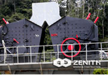
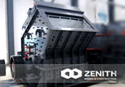
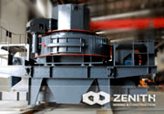
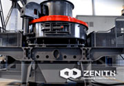
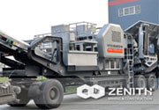

Products Center
Welcome to Shanghai Zenith Mining and Construction Machinery Co., Ltd. Zenith is one of the biggest manufacturer in crushing and grinding industry in China. Zenith was founded over thirty years ago to manufacture machines mainly applied in processing aggregate and mineral powder.
-

PFW Impact Crusher
The PFW impact crusher is also called European style impact crusher, often used in the secondary crushing and fine crushing. It is very suitable for open-pit crushing in quarries. PFW series impact crushers are adopted by....
Read more -

PF Impact Crusher
Impact crusher can deal with each kind of coarse, medium, fine cubic material (granite, limestone and concrete, etc) with feeding size not more than 500mm and crushing strength not more than 350MPa.....
Read more -

VSI Crusher
In the global mining industry, VSI crusher, with the full name Vertical Shaft Impact Crusher, also is called as sand making machine. Compared with other types of impact crushers...
Read more -

Deep Rotor VSI Crusher
Deep Rotor VSI Crusher integrates many patents and three crushing methods, is a new and high efficiency crusher. It is a key equipment to provide excellent aggregate to highway, railway and water resource industry....
Read more -

Portable Crusher
In spite of complicate conditions in the quarry, mobile crushers can overcome those limitations, and give play to advantages in the mining industry. Undoubtedly, Zenith's portable crushing plant has ....
Read more -
Sand Making Machine
The machine is specially designed for highway, high-rise buildings,hydroelectric dam construction, municipal, concrete mixing stations to provide quality sand and gravel aggregate....
Read more